Technical report: DRAFT · PES University, UE24CS352A Machine Learning hackathon · Team: Subramani B M, Sruthi Vejju, Shwetha S, Shubham Singh
Repository: https://github.com/SruthiVejju/pathsnap
How to read this draft. Every number, table and graph below is generated by scripts/build_report.py from result files committed in the
repository, so each can be checked against the repo (Section 8 maps each result to its file and script). Sections with a
yellow "TEAM TO WRITE" box need the named teammate's own explanation; those boxes must be replaced before submission.
Blue dashed boxes mark screenshots that only the team can capture. Results on the evaluator partition are not used or reported anywhere in this report.
PathSnap converts a noisy GPS track into the sequence of road segments (arcs) a vehicle drove. Our pipeline has four stages: (1) candidate generation: every GPS point gets up to 25 road arcs within 60 m; (2) a classifier (HistGradientBoosting on 23 features) scores how likely each candidate is the true arc; (3) an HMM/Viterbi decoder chooses the most coherent arc sequence through the road network; (4) a FastAPI server returns the predicted route to a UI running on a second laptop and scores it server-side against private reference routes.
| Result (pointwise accuracy on points whose true arc is among the candidates; mean over trips) | Training trips (out-of-fold) | Student-test trips |
|---|---|---|
| Classifier only | 89.9% | 90.9% |
| Classifier + tuned HMM (final system) | 95.8% | 96.5% |
| Route continuity, final system | 0.913 | 0.919 |
Key findings (all measured, see Sections 3-5):
Partitions. The dataset has three partitions: training (80 trips, used for fitting, cross-validation and tuning), student-test (10 trips, used only for development-stage comparison) and evaluator (10 reserved trips, never used in development, not analysed here). Each trip has a GPS track (.track: longitude, latitude, time), a road graph (.nodes, .arcs) and a reference route (.route: an ordered list of arcs, with no per-point labels).
src/pathsnap/data/geo.py) so distances and headings are in metres.src/pathsnap/candidates.py, never reads the route): for every GPS point, the road arcs within 60 m are found with a KD-tree on arc midpoints followed by exact point-to-segment distance; the 25 nearest are kept..route has no per-point labels, a monotonic dynamic-programming alignment of the GPS points to the ordered reference route assigns each point its true arc; a candidate is labelled 1 if it equals that arc. These are derived labels, not independent ground truth.docs/data_quality/trip_offsets.md, and the training tables can be rebuilt excluding them (--exclude-trip).TEAM TO WRITE (Shwetha S): in your own words, confirm or correct steps 1-5 above and add anything else you did to read, inspect and clean the raw data (for example the trips or rows you removed and why). Explain why a 60 m radius and a cap of 25 candidates were chosen (what evidence did you use?).
| Check | Training (80 trips) | Student-test (10 trips) |
|---|---|---|
| Trips | 80 | 10 |
| GPS points | 208,417 | 19,160 |
| Median GPS points per trip | 1,529 | 1,420 |
| Median road nodes per trip | 9,608 | 6,596 |
| Median road arcs per trip | 19,526 | 13,145 |
| Median reference-route arcs per trip | 280 | 250 |
| NaN / inf values in .track | 0 | 0 |
| NaN / inf values in .nodes | 0 | 0 |
| Timestamps going backwards | 0 | 0 |
| Duplicate timestamps | 0 | 0 |
| Median time step (s) | 1.0 | 1.0 |
| Time gaps over 30 s | 133 | 2 |
| Trips containing a gap over 30 s | 28 | 2 |
| Largest time gap (s) | 153,064 | 210 |
| Arcs referencing a missing node | 0 | 0 |
| Route entries referencing a missing arc | 0 | 0 |
No missing, infinite or out-of-order values were found in either partition, and every arc and route entry refers to an existing node or arc. The data's real "gaps" are in time, not in values: most trips are sampled every second, but 28 of 80 training trips contain at least one pause longer than 30 s (up to 153,064 s), which the decoder handles by cutting the chain (Section 5). The other kind of "missing" is a candidate miss: the reference arc is not among a point's candidates. On the student-test partition this happens for 0.13% of points.
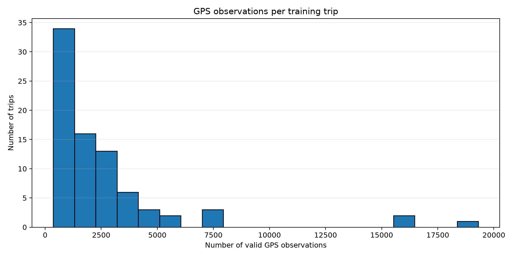
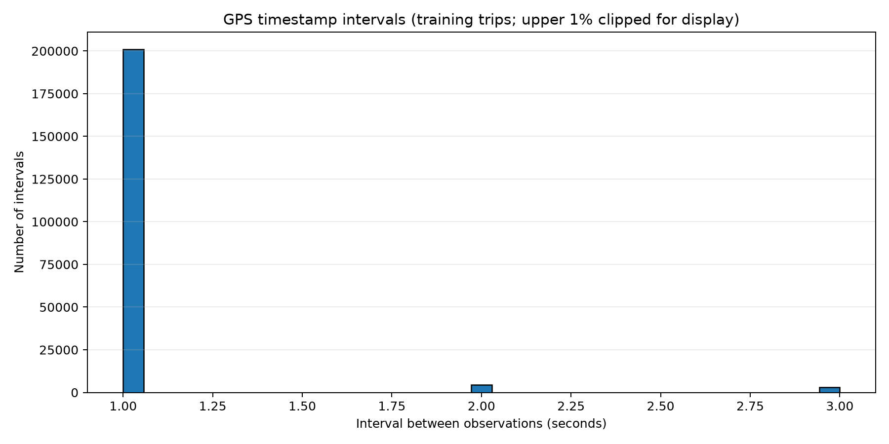
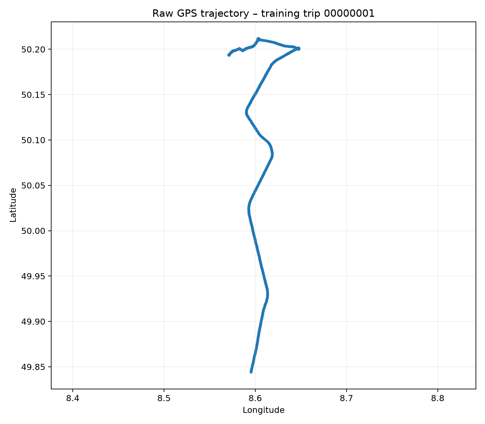
Road-network geometry and GPS observations together on a map are in Section 6 (Figures 6.1-6.3, student-test partition).
Offsets between GPS and reference route. For training trips 00000033 and 00000054 the GPS track and the reference route have the same shape but are displaced by about 130-140 m (docs/data_quality/trip_offsets.md, reproduced by scripts/diagnose_offset.py). These two trips cause more than half of the candidate misses in the training set and are reported separately where relevant.
Features. The classifier uses 23 features per (GPS point, candidate arc) pair.
| Group | Feature | What it captures |
|---|---|---|
| Base | dist_m |
distance from the GPS point to the arc (m) |
| Base | frac_along |
position of the projected point along the arc (0 to 1) |
| Base | arc_len_m |
arc length (m) |
| Base | cos_heading |
agreement between the vehicle's heading and the arc direction |
| Base | dist_rank, n_cand, min_dist_m, dist_gap_to_best |
how the arc compares with the other candidates of the same point |
| Base | speed_mps, dt_prev_s, moving |
vehicle speed, time since the previous point, whether it is moving |
| Context | dist_prev1, dist_next1, dist_prev2, dist_next2 |
distance of the same arc from the neighbouring GPS points (NaN if it is not a candidate there or across a time gap) |
| Context | along_prev1_m, along_next1_m, along_span2_m |
how far the vehicle moved along the arc between neighbouring points: positive on the arc it is driving along, negative on its opposite-direction twin |
| Context | win_support, win_mean_dist, win_rank, win_gap_to_best |
how consistently the arc stays close over a 5-point window, and its rank within that window |
| Context | cos_heading_win |
heading over a 7-point window, less noisy than the single-point heading |
The context features were added after an error analysis of the first system (Section 5.3): 28.3% of its decoder errors were opposite-direction twin arcs and 47.1% were neighbouring arcs, and in 84.6% of the errors the predicted arc was as close to the GPS point as the labelled one, which no single-point distance feature can separate.
TEAM TO WRITE (Shwetha S for the base features, Subramani for the context features): explain in your own words why each group of features was chosen and what pattern in the data motivated it. Point to evidence (a plot, a number) for at least two features.
Five model families were trained and compared with the same data, features and protocol: 3-fold GroupKFold by trip on the 80 training trips (so no trip is in both the training and validation part of a fold), a fit on up to 60,000 sampled candidate rows, and evaluation on the 10 student-test trips. Seed 42 throughout. Code: training/experiments.py; raw results: results/experiments.json, results/comparison.csv. These comparisons use the 11 base features; the final model (23 features) is described at the end of this section.
| Model | Family | Key configuration | CV macro-F1 | Top-1 acc. | Route cont. | Test macro-F1 | Log loss | Infer. time (s) |
|---|---|---|---|---|---|---|---|---|
| Logistic regression | Linear / probabilistic | StandardScaler + LogisticRegression(C=1, max_iter=300) | 0.883 | 0.842 | 0.912 | 0.898 | 0.090 | 0.003 |
| Gaussian naive Bayes | Probabilistic (generative) | GaussianNB(var_smoothing=1e-09) | 0.702 | 0.802 | 0.909 | 0.754 | 0.486 | 0.006 |
| Decision tree | Tree-based | DecisionTree(max_depth=12, min_samples_leaf=12) | 0.882 | 0.838 | 0.902 | 0.908 | 0.206 | 0.004 |
| Extra trees | Ensemble (randomised trees) | ExtraTrees(32 trees, max_depth=14, min_samples_leaf=12) | 0.894 | 0.843 | 0.913 | 0.912 | 0.076 | 0.120 |
| HistGradientBoosting (default) | Boosting | HistGB(learning_rate=0.100, max_leaf_nodes=31, max_iter=60) | 0.902 | 0.855 | 0.922 | 0.917 | 0.062 | 0.123 |
| HistGradientBoosting (tuned) | Boosting | HistGB(learning_rate=0.054, max_leaf_nodes=33, max_iter=60) | 0.903 | 0.856 | 0.922 | 0.917 | 0.065 | 0.106 |
| Final: HistGB, 23 features | Boosting | same hyper-parameters as tuned HistGB; 11 base + 12 context features; all training rows | 0.932 (5-fold) | 0.893 | N/A (see note) | 0.938 | 0.050 | 0.057 |
Notes. Metrics are on the student-test partition except CV macro-F1. Top-1 accuracy is observation-level: for each GPS point the highest-scoring candidate is compared with the derived reference arc. Route continuity in this table is the share of consecutive top-1 arcs that are connected in the road network (classifier only, no HMM); the final-system row shows N/A because it is defined for the full pipeline in Section 5 (the HMM-aware continuity values are in Section 5). Inference time is predict_proba over all 232,769 student-test candidate rows. Candidate miss rate is 0.13% for every model (it depends on candidate generation, not on the model). Gaussian naive Bayes' very high recall (0.912) with low precision (0.704) means it over-predicts "true arc".
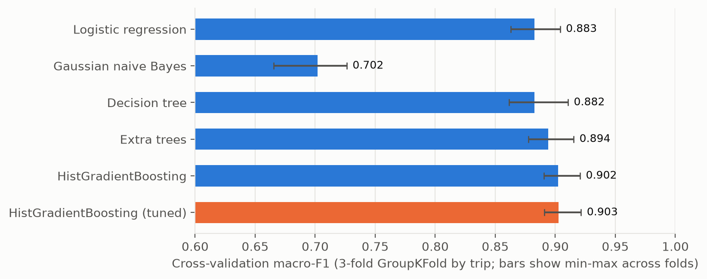
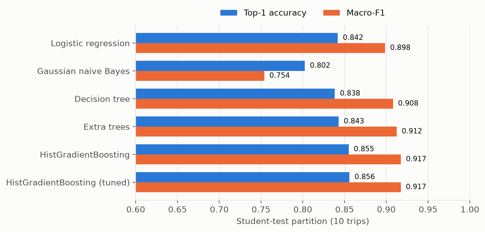
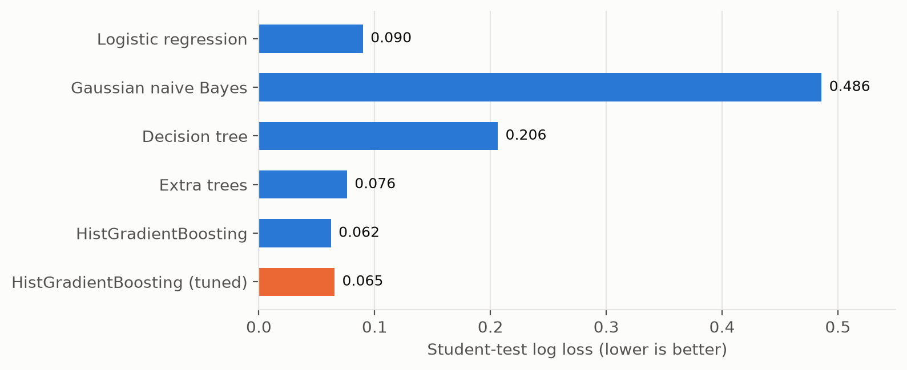
Per-fold scores and the gap between cross-validation and student-test performance (used below as overfitting evidence):
| Model | Fold 1 | Fold 2 | Fold 3 | Mean | Student-test macro-F1 | CV minus student |
|---|---|---|---|---|---|---|
| Logistic regression | 0.881 | 0.904 | 0.863 | 0.883 | 0.898 | -0.016 |
| Gaussian naive Bayes | 0.666 | 0.726 | 0.714 | 0.702 | 0.754 | -0.052 |
| Decision tree | 0.875 | 0.911 | 0.862 | 0.882 | 0.908 | -0.026 |
| Extra trees | 0.889 | 0.915 | 0.878 | 0.894 | 0.912 | -0.018 |
| HistGradientBoosting (default) | 0.895 | 0.921 | 0.891 | 0.902 | 0.917 | -0.015 |
| HistGradientBoosting (tuned) | 0.895 | 0.921 | 0.891 | 0.903 | 0.917 | -0.015 |
None of these models produces an epoch-wise training history (they are fitted in one pass or by a fixed number of boosting stages), so no training/validation loss curves are shown; creating them would be artificial.
StandardScaler + LogisticRegression(C=1, max_iter=300))A. Understanding.
GaussianNB(var_smoothing=1e-09))A. Understanding.
dist_m and dist_rank that are strongly related?DecisionTree(max_depth=12, min_samples_leaf=12))A. Understanding.
ExtraTrees(32 trees, max_depth=14, min_samples_leaf=12))A. Understanding.
HistGB(learning_rate=0.100, max_leaf_nodes=31, max_iter=60))A. Understanding.
Figures 3.1-3.3 compare all models on cross-validation macro-F1, student-test top-1 accuracy and macro-F1, and log loss. Confusion matrix of the final classifier on the student-test partition (threshold 0.5; the classes are heavily imbalanced because most candidates are not the true arc):
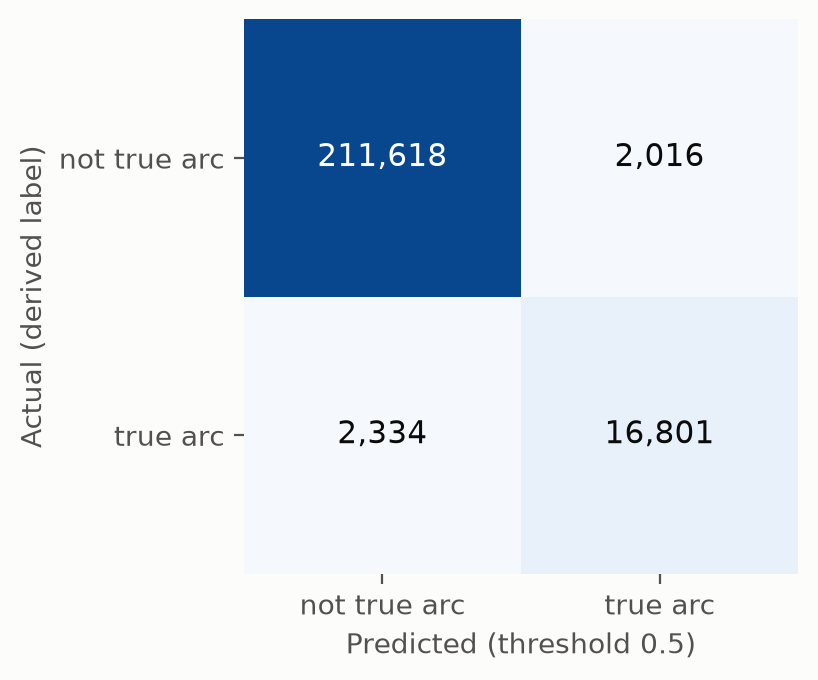
| Predicted: not true arc | Predicted: true arc | |
|---|---|---|
| Actual: not true arc | 211,618 | 2,016 |
| Actual: true arc | 2,334 | 16,801 |
HistGradientBoosting had the highest cross-validation macro-F1, the highest top-1 accuracy and the lowest log loss; extra trees was close behind. Log loss is weighted heavily in the choice because the decoder consumes the probabilities directly: a model with the same macro-F1 but over-confident probabilities (the decision tree) gives the HMM poorer emission scores.
Final classifier. After the error analysis in Section 5, the classifier was refitted with the same hyper-parameters on 23 features (the 11 base features plus 12 neighbour-point context features) using all training rows instead of a 60,000-row sample. Its measured performance (script: scripts/final_classifier_metrics.py, output results/report/final_classifier_metrics.json):
| Metric | 5-fold GroupKFold (training trips) | Student-test |
|---|---|---|
| Macro-F1 | 0.932 (folds 0.936, 0.906, 0.931, 0.955, 0.932) | 0.938 |
| Observation-level top-1 accuracy | 0.870 | 0.893 |
| Log loss | 0.062 | 0.050 |
| Macro precision / recall | n/a | 0.941 / 0.934 |
The in-sample training macro-F1 of the shipped model is 0.941, compared with 0.932 out-of-fold and 0.938 on student-test, so the gap between fitting and validation is small (the model has only 60 boosting stages) and no strong overfitting is visible.
TEAM TO WRITE (Sruthi V): in your own words, explain the primary metric you used to select the model and why it suits PathSnap (candidate-level macro-F1 versus observation-level top-1 versus the final route accuracy), and what you would try with more time.
Code: training/experiments.py (function bayesian_search); every trial is stored in results/experiments.json.
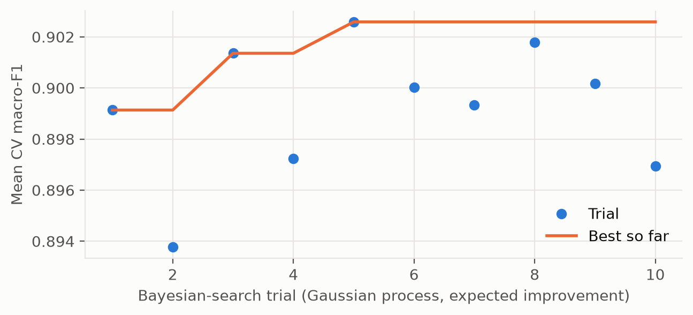
Did the tuned model outperform the untuned one? Same metrics, same partitions for both:
| Metric (same partitions and metrics for both) | Untuned (lr 0.1, 31 leaves) | Tuned | Change |
|---|---|---|---|
| Cross-validation macro-F1 | 0.9022 | 0.9026 | +0.0004 |
| Student-test top-1 accuracy | 0.8550 | 0.8559 | +0.0009 |
| Student-test macro-F1 | 0.9175 | 0.9174 | -0.0001 |
| Student-test log loss | 0.0623 | 0.0654 | +0.0031 |
| Inference time (232,769 rows) | 0.123 s | 0.106 s | -0.017 s |
| Training time (60,000-row fit) | 0.182 s | 0.171 s | -0.011 s |
The tuned model is better on cross-validation macro-F1 by only +0.0004, which is smaller than the spread between folds (0.891 to 0.921), and it is not better on every student-test metric (macro-F1 and log loss are slightly worse, top-1 slightly better). The honest conclusion is that the default configuration was already close to the best this feature set allows; the improvement that mattered came from the features and the decoder (Sections 2.3 and 5). Search cost: 21.8 s in total for the 10 trials.
The decoder has its own Bayesian optimisation (Optuna TPE, 60 trials, seed 42), described in Section 5.
TEAM TO WRITE (Sruthi V): justify the search space and the choice of a Gaussian-process / expected-improvement strategy in your own words. Why only two hyper-parameters, and what would you search with a larger budget?
Code: src/pathsnap/hmm/viterbi.py (decoder), src/pathsnap/hmm/graph.py (road graph), src/pathsnap/hmm/metrics.py (metrics), scripts/tune_decoder.py and scripts/train_context_model.py (tuning).
1. Hidden states. For each GPS point the state is one of that point's candidate road arcs (directed segments, at most 25 within 60 m). Because states are arcs, the candidate-to-road-segment correspondence is preserved: the decoder outputs an arc id per GPS point.
2. Emission. The log of the classifier's probability that the candidate is the true arc: emit(t, j) = emission_weight * log P(arc j is true | features). The classifier gives a posterior, not a likelihood, so this is a practical scoring rule rather than a strictly Bayesian emission model.
3. Transition. The cost of moving from arc i at point t-1 to arc j at point t depends on directed arc-steps h through the road graph: staying on the same arc costs 0; a reachable arc costs hop_penalty * h (up to max_hops); an arc that is not reachable costs unreachable_penalty; and turning around onto the opposite-direction twin arc costs uturn_penalty (the breadth-first search used for h never takes a free turnaround step). The log-transition score is the negative cost. These are costs, not normalised probabilities.
Viterbi recurrence. delta_t(j) = emit(t, j) + max_i [ delta_{t-1}(i) - cost(i, j) ], with back-pointers argmax_i; the best path is recovered by backtracking from argmax_j delta_T(j).
4. Missing candidates and GPS gaps. A GPS point with no candidate is skipped and gets the output −1; the chain bridges over it. If the time between consecutive points exceeds gap_s the chain is cut and each piece is decoded independently, so no transition is imposed across a long pause.
5. Disconnected road segments. Disconnection is a soft penalty, never a hard ban. If consecutive observations suggest arcs that are not connected within max_hops, the decoder pays unreachable_penalty and can still choose them. This keeps noisy or offset data (for example trips 00000033 and 00000054) from making the decoder fail, at the price of occasionally accepting a jump.
Decoder settings. Chosen by Bayesian optimisation (Optuna TPE, seed 42, 60 trials) on the training trips using out-of-fold classifier probabilities, so the decoder is tuned against probabilities that were not produced by a model fitted on the same trips. Objective: mean over trips of pointwise accuracy on points whose true arc is among the candidates.
| Parameter | Tuned value | Meaning |
|---|---|---|
| emission_weight | 1 | scales the classifier log-probability (fixed at 1; only ratios to the penalties matter) |
| hop_penalty | 2.565 | cost per road-network step between consecutive arcs |
| unreachable_penalty | 1469 | cost when the next arc is not reachable within max_hops (soft, never forbidden) |
| max_hops | 9 | longest arc-to-arc path considered reachable |
| gap_s | 43.7 | time gap above which the chain is cut and decoded independently |
| uturn_penalty | 118 | cost of turning around onto the opposite-direction twin of the previous arc |
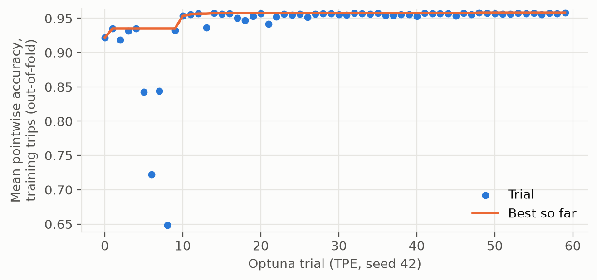
| Partition | Variant | Pointwise accuracy (covered points) | Route continuity |
|---|---|---|---|
| 80 training trips (out-of-fold) | Classifier only (top-1 per point) | 89.9% | 0.809 |
| 80 training trips (out-of-fold) | Classifier + HMM, default settings | 92.2% | 0.908 |
| 80 training trips (out-of-fold) | Classifier + HMM, tuned | 95.8% | 0.913 |
| 10 student-test trips | Classifier only (top-1 per point) | 90.9% | 0.833 |
| 10 student-test trips | Classifier + HMM, default settings | 92.9% | 0.911 |
| 10 student-test trips | Classifier + HMM, tuned | 96.5% | 0.919 |
Pointwise accuracy is the share of GPS points whose predicted arc equals the arc the point aligns to on the reference route, computed on points whose true arc is among the candidates, then averaged over trips. Route continuity is the share of consecutive predicted-arc changes that follow the directed road network.
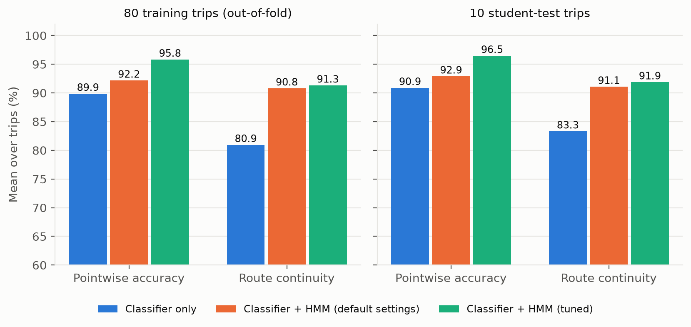
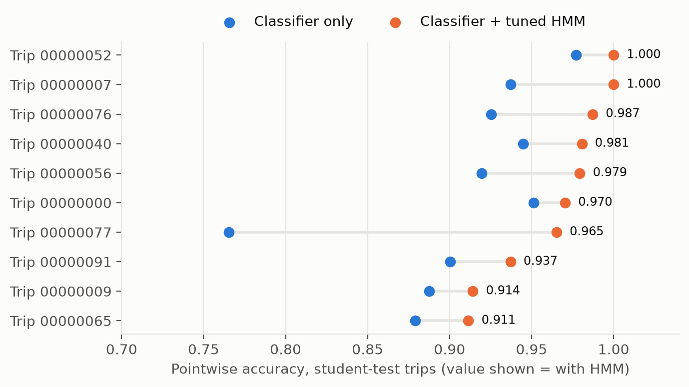
Yes. On the student-test trips the HMM raised accuracy in 10 of 10 trips and lowered it in 0; the largest gain is trip 00000077 (+20.0 points). On the training trips it lowered accuracy in 1 of 80 trips. The classifier alone often picks a neighbouring or opposite-direction road for single points; the HMM removes isolated flips because they require expensive jumps.
Accuracy points are cumulative; the 11-feature runs used a 60,000-row classifier fit for the out-of-fold probabilities, the 23-feature runs used all rows (a direct check showed this alone changes the final accuracy by under 0.1 points).
| Step | System | Training trips (out-of-fold) | Student-test trips |
|---|---|---|---|
| 1 | 11 base features, classifier only | 85.1% | 87.2% |
| 2 | + HMM, default settings | 90.6% | 91.6% |
| 3 | + Bayesian-tuned HMM (hop penalty, unreachable penalty, max hops, gap) | 95.1% | 95.5% |
| 4 | 23 features (adds context features), classifier only | 89.9% | 90.9% |
| 5 | + HMM, default settings | 92.2% | 92.9% |
| 6 | + tuned HMM including the U-turn penalty (final system) | 95.8% | 96.5% |
scripts/error_analysis.py, results/report/error_analysis.json) shows 28.3% of wrong points are the opposite-direction twin of the labelled arc, 47.1% are a neighbouring arc within three steps, 24.7% other; in 84.6% of the errors the predicted arc is at least as close to the GPS point as the labelled one (within 3 m), so distance alone cannot separate them. That motivated the context features and the U-turn penalty.gap_s from 28 to 96 s and uturn_penalty from 70 to 333. The objective is flat in those directions, so individual trips with long pauses can react to gap_s even though the training average does not.TEAM TO WRITE (Subramani B M): in your own words, explain the Viterbi recurrence and the three cost terms (hop, unreachable, U-turn) as you would to the evaluator, and say which failure case in 5.3 you would fix first and how.
Maps are produced by the real pipeline (scripts/folium_prediction_map.py), not drawn by hand: the script loads a trip, runs TrainedPipeline without passing the reference route, and draws five toggleable layers: raw GPS observations (orange dots; popup = point index and timestamp), road network around the trip (grey), reference route (green, offline analysis only), predicted route: classifier + HMM (blue) and predicted route: classifier only (red, hidden by default). A legend (bottom left) and a layer control (top right) are included, and the map zooms to the trip's bounding box. All maps below use the student-test partition, with the final trained model.
python scripts/folium_prediction_map.py "../Student folder/student_test/00000009" docs/report/maps/student_test_00000009.html
python scripts/folium_prediction_map.py "../Student folder/student_test/00000009" docs/report/maps/zoom.html --start 0 --end 160
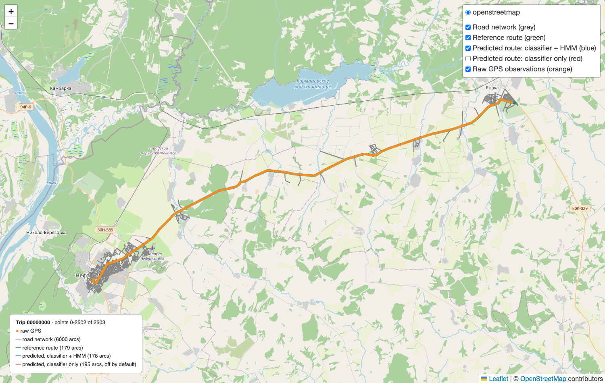
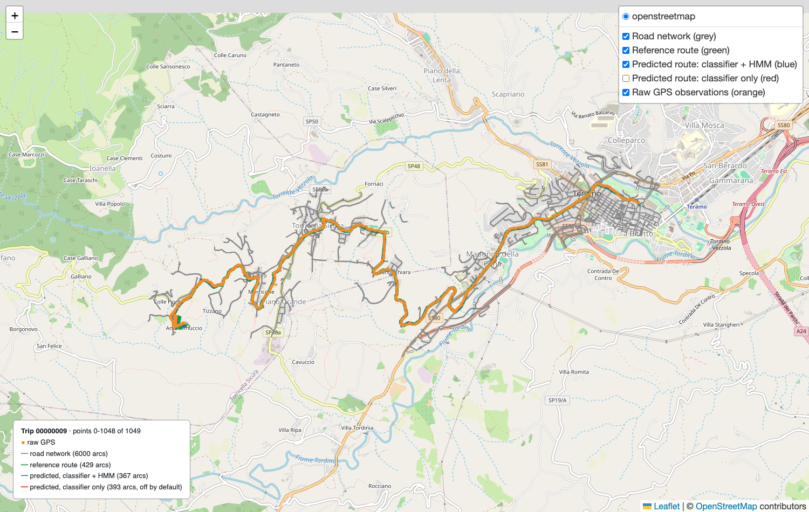
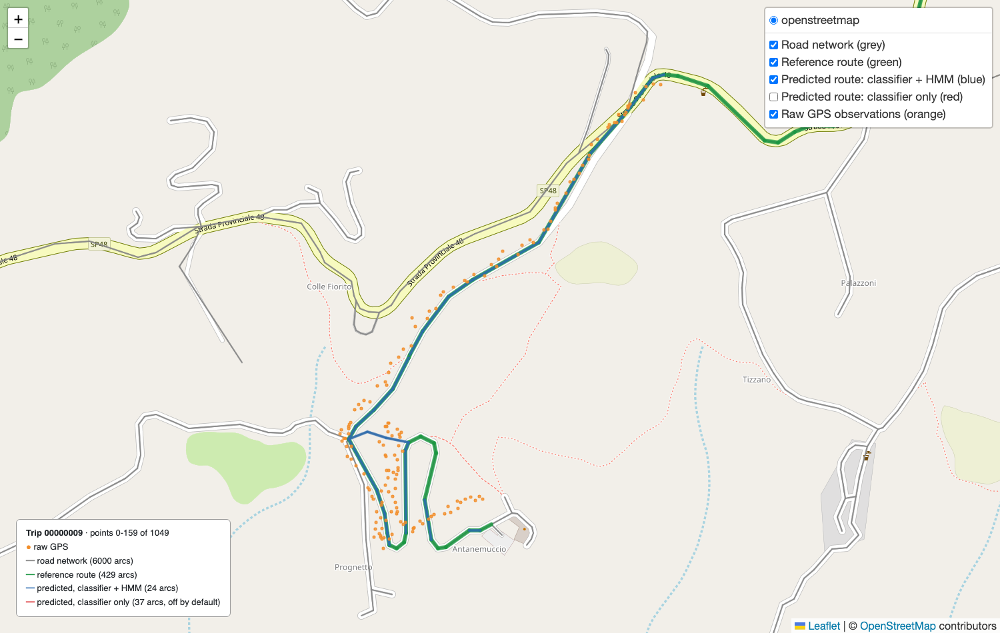
The interactive HTML maps are regenerated by the commands above (they are 6-7 MB each because of the road-network layer, so they are not committed); maps/student_test_00000007.html and maps/student_test_00000009.html are committed examples.
TEAM TO WRITE (any member): describe in two or three sentences what an evaluator should look at in these maps, and add a screenshot of a different trip of your choice if you want.
Architecture. Laptop 1 runs the FastAPI server (api/main.py, uvicorn on 0.0.0.0:8000). Laptop 2 runs the React/Vite UI (ui/), which sends only a trip id. For every request the server loads that trip's GPS track and road graph, runs the full pipeline (candidate generation, context features, classifier, HMM/Viterbi) without the reference route, then reads the private reference route to compute metrics. Only the predicted route, the raw GPS and numeric metrics are returned: the reference route and labels never leave the server (a test, tests/test_api.py, checks this).
| Endpoint | Purpose |
|---|---|
GET /health |
status, loaded pipeline, trip folders, decoder settings |
GET /trips |
trip ids, plus groups (ids per source folder) |
POST /predict/{trip_id} (also POST /predict with {"trip_id": ...}) |
predicted route, raw GPS, summary, metrics, latency |
Metrics returned (numbers only): pointwise_accuracy (share of GPS points whose predicted arc equals the reference-aligned arc), route_continuity (share of predicted-arc changes that follow the road network), route_f1 with route_precision and route_recall (set of predicted arcs against the set of reference-route arcs), each also for the classifier-only baseline, plus the latency of the pipeline.
Logging. Every request is written to the terminal and to logs/api.log with the caller's address, e.g.
INFO predict trip=<id> points=<n> latency=<ms> ms accuracy=<x> continuity=<x> f1=<x>
INFO POST /predict/<id> from=<Laptop 2 address> -> 200 in <ms> ms
Deployment. Both laptops on the same network. Laptop 1: uvicorn api.main:app --host 0.0.0.0 --port 8000 with PATHSNAP_EVAL_DIR pointing to the trip folder; Laptop 2: set VITE_API_BASE_URL=http://<Laptop-1-IP>:8000 in ui/.env, then npm install && npm run dev. The server refuses to start if the model artifact's feature list does not match the code, so a stale model can never give silently wrong predictions. Full instructions are in the README.
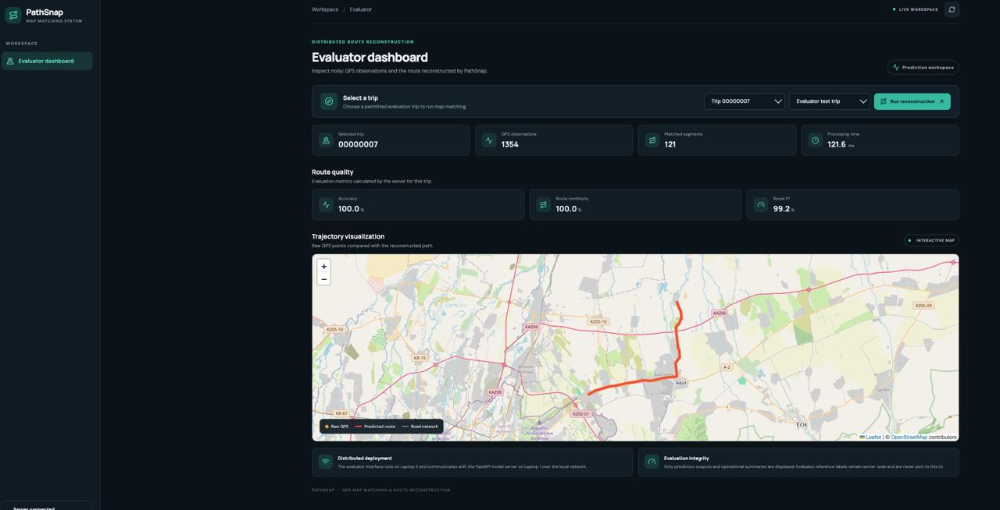
SCREENSHOT NEEDED (Subramani B M): the terminal/CMD of Laptop 1 showing successful /predict requests with from=<Laptop 2's address> (this proves the request came over the network).
TEAM TO WRITE (Subramani B M and Shubham Singh): describe how you tested the two-laptop setup (network, firewall, which trips you ran) and anything that failed and how you fixed it.
| Report section | Result | File | Produced by |
|---|---|---|---|
| 2.2 | Missing-value and integrity checks | results/report/data_checks*.csv |
scripts/report_data_checks.py |
| 2.3 | EDA plots | results/eda/*.png |
scripts/eda.py, scripts/eda_plots.py |
| 3, 4 | Five-model comparison, model tuning | results/comparison.csv, results/experiments.json |
training/experiments.py |
| 3.4 | Final classifier metrics | results/report/final_classifier_metrics.json |
scripts/final_classifier_metrics.py |
| 5 | Decoder tuning, classifier-only vs HMM, ablation | results/context_model/*, results/decoder_tuning/* |
scripts/train_context_model.py, scripts/tune_decoder.py |
| 5.3 | Error analysis | results/report/error_analysis.json |
scripts/error_analysis.py |
| 6 | Folium maps | maps/*.html |
scripts/folium_prediction_map.py |
| All figures | Report graphs | docs/report/figures/*.png |
scripts/make_report_figures.py |
| All | This document | docs/report/ |
scripts/build_report.py |
pip install -r requirements.txt && pip install -e . && pip install -r requirements-ml.txt
python scripts/build_dataset.py "<data>/train" work/train.csv.gz
python scripts/build_dataset.py "<data>/student_test" work/student_test.csv.gz
python training/experiments.py ... # five-model comparison and tuning (see README-ML.md)
python scripts/train_context_model.py --train-dir "<data>/train" --train-csv work/train.csv.gz \
--student-dir "<data>/student_test" --student-csv work/student_test.csv.gz \
--base-model artifacts/candidate_model.joblib --trials 60 --write-artifact
python scripts/final_classifier_metrics.py ... # same arguments as above
python scripts/make_report_figures.py && python scripts/build_report.py
python -m pytest tests -q # 25 tests
Seeds are 42 everywhere; cross-validation is GroupKFold by trip; the evaluator partition is never read by any development script.
| Member | Area | Main artefacts (see README "Credits and provenance") |
|---|---|---|
| Shwetha S | Data and features | src/pathsnap/data, src/pathsnap/candidates.py, scripts/build_dataset.py, scripts/eda*.py, data tests |
| Sruthi Vejju | Models and tuning | training/experiments.py, results/comparison.csv, results/experiments.json, early model artefacts, repository owner |
| Subramani B M | Decoder, API, integration, context features, decoder tuning | src/pathsnap/hmm, src/pathsnap/context.py, src/pathsnap/pipeline.py, api/, scripts/tune_decoder.py, scripts/train_context_model.py, maps, this report's build scripts |
| Shubham Singh | UI | ui/, docs/ui-api-contract.md |
TEAM TO WRITE (each member, 2-3 sentences): what you personally built, one decision you made, and one thing that did not work. Everyone must be able to explain their part and the whole pipeline in the evaluation.
TEAM TO CONFIRM AND COMPLETE: the event policy requires disclosure of AI assistance. Draft for the team to edit so that it is true for every member: "An AI coding assistant (Claude Code, Anthropic) was used by Subramani B M to help implement and test the HMM/Viterbi decoder, the FastAPI backend, the neighbour-point context features, the decoder-tuning and result-generation scripts, and to draft the structure of this report. All results in the report are produced by the committed scripts from the committed data files, and the team reviewed the code and results. Explanations marked 'TEAM TO WRITE' were written by the named members. [Add here which AI tools, if any, were used by Shwetha, Sruthi and Shubham, and for what.]" Delete this paragraph's brackets and this box when final.